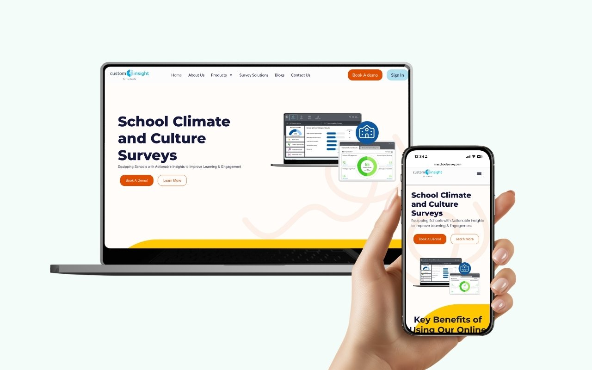
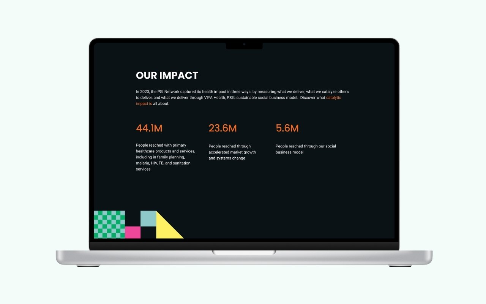
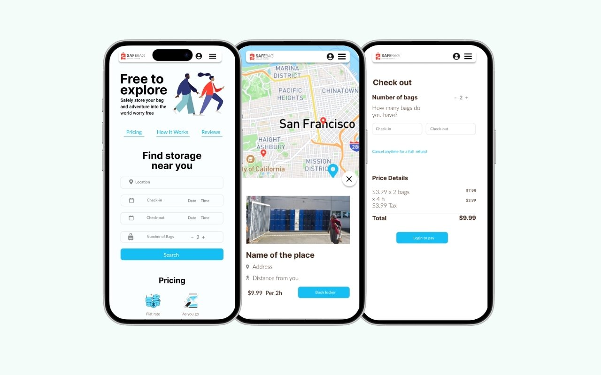

I'm Ana Ortega Lambert. I lead visual identity for PSI's portfolio of 10+ brands, and I build the systems, governance, and training that keep every team on brand without me in the room.

A dedicated education-market site for a SaaS survey company, built to compete for district budgets and capture qualified leads.
View case study →
Redesign that put 44.1M people reached front and center for donors and partners.
View case study →
End-to-end app design, from user flows to design system, built to make same-day booking effortless.
View case study →Template architecture, asset governance, and a training program spanning Canva, Adobe libraries, and a central brand database. The case study your other case studies live inside.
Read the full story →Six-plus years leading creative for a global health organization taught me one thing: brand consistency is an operations problem wearing a design costume.
So I work on both. I set the visual direction, present it to executive leadership, and defend the why. Then I build the templates, workflows, and training that let designers and non-designers across Latin America, Africa, and Europe apply it without breaking it.
Beyond the screen: a certified diver drawn to coral restoration, another system that only works when you understand how the parts connect.